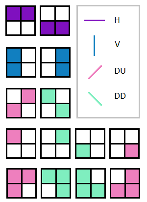

Image classification is a good example of how a hierarchy can process information flowing up.

To start with the basics - an image is partitioned into 3x3 partitions.
Each partition can be classified based up on the configuration of the black/white pixels. A map is used to describe the basic classes of a 3x3 configurations.
